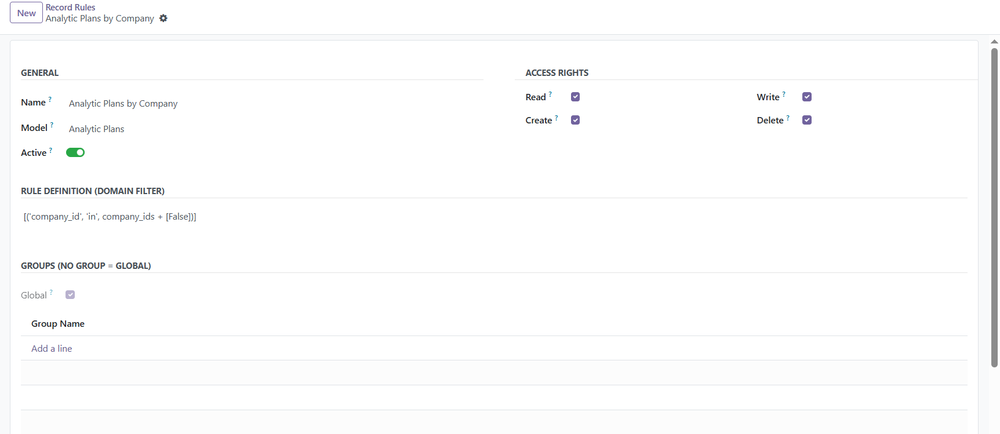
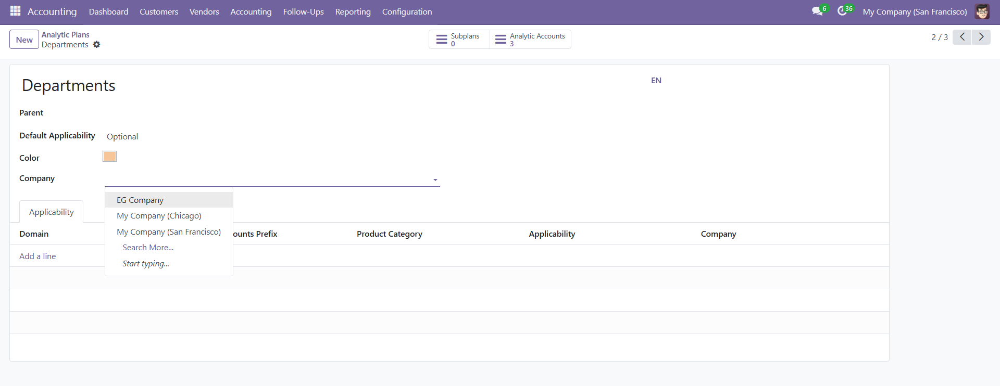

Analytic Plans by Company
Overview
Enhance your Odoo Accounting module with the Analytic Plans by Company module!
This lightweight module adds a company_id field to analytic plans, ensuring that users
can only view plans associated with their specific company. Perfect for multi-company setups, it
streamlines data access and improves privacy.
Key Features
- Company-Based Filtering: Automatically filters analytic plans by the user's company, ensuring data relevance and security.
- Seamless Integration: Integrates with the Odoo Accounting module, adding a
company_id field to analytic plans.
- Record Rule for Filtration: Implements a domain filter to restrict visibility of analytic plans to the respective
company_id.
- Multi-Company Support: Ideal for businesses managing multiple companies in Odoo.
Screenshots
Screenshot 1: Record Rule Configuration
The module sets up a record rule to filter analytic plans by company_id. The domain filter
[('company_id', 'in', company_ids + [False])] ensures that only relevant plans are visible to users.

Screenshot 2: Analytic Plans in Action
View analytic plans filtered by company in the Accounting module. The dropdown menu allows users to select
plans specific to their company, such as "My Company (Chicago)" or "My Company (San Francisco)".

Benefits
- Enhanced Data Privacy: Restrict analytic plans visibility to the respective company, reducing data leakage risks.
- Improved User Experience: Users only see relevant analytic plans, simplifying navigation and decision-making.
- Simplified Multi-Company Management: Perfect for businesses operating with multiple companies in Odoo.
Compatibility
- Odoo Version: 17.0 (Community Edition)
- Module Dependency: Accounting
Installation
- Download and install the module from the Odoo Apps store.
- Navigate to the Accounting module and configure the analytic plans as needed.
- The module automatically applies the record rule for company-based filtering.
Support
For any questions or assistance, contact us via the Odoo Apps store support channel or reach out to the author,
Muhammad Wael
+201110002767.